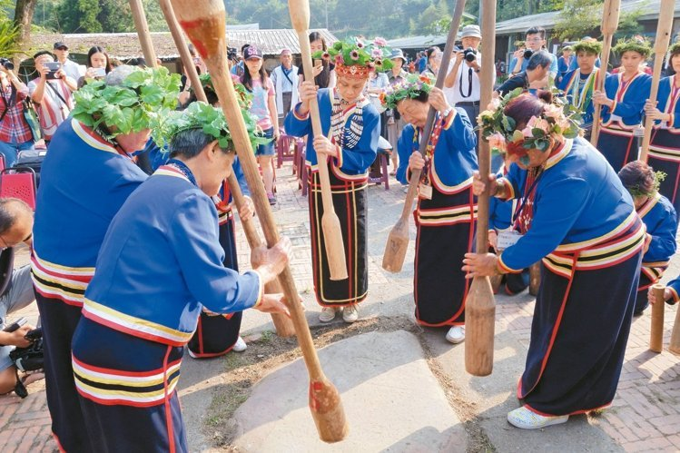
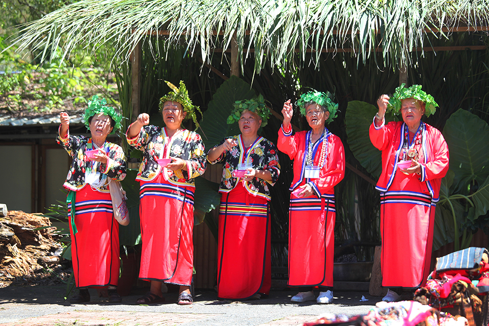

族群介紹
邵族是台灣人口最少的原住民族之一，主要分布在南投縣魚池鄉日月潭周邊地區。 傳統生活與湖泊環境緊密相連，早期以漁撈、農作與湖上交通為重要生計方式。
邵族擁有獨特的語言與祭儀文化，透過歌舞、祭典與日常生活實踐， 來維繫族群記憶與湖岸生活智慧。日月潭附近的部落空間中， 仍可看到邵族傳統信仰與現代觀光並存的樣貌。
地理位置
邵族主要集中於南投縣魚池鄉日月潭周邊，是典型的湖岸聚落型態。
景點特色
以下為與邵族文化與日月潭周邊相關的特色地點：
| 地點名稱 | 地區 | 特色說明 |
|---|---|---|
| 伊達邵部落 | 南投縣魚池鄉 | 邵族主要聚落之一，保留傳統祭儀、歌舞表演與文化展示， 也是遊客認識邵族的重要窗口。 |
| 日月潭湖岸 | 南投縣 | 湖泊景觀優美，過去是族人漁撈、運輸及聚落發展的重要空間。 現今結合觀光與文化活動。 |
飲食文化
邵族飲食受到湖泊資源與山林環境的影響，常見料理結合魚類與在地農作：
| 食物名稱 | 主要材料 | 文化說明 |
|---|---|---|
| 總統魚料理 | 曲腰魚或養殖魚類 | 日月潭常見的魚類料理，與湖泊生活密切相關， 雖不完全等同傳統邵族飲食，但體現在地湖岸飲食文化。 |
| 小米、地瓜等作物料理 | 小米、地瓜、蔬菜 | 結合山區農作與湖岸生活，反映早期族人自給自足的飲食方式。 |
照片與影片介紹
部落與湖岸照片
 以上為邵族的衣著特色。
影片介紹
以上為邵族的文化介紹影片。